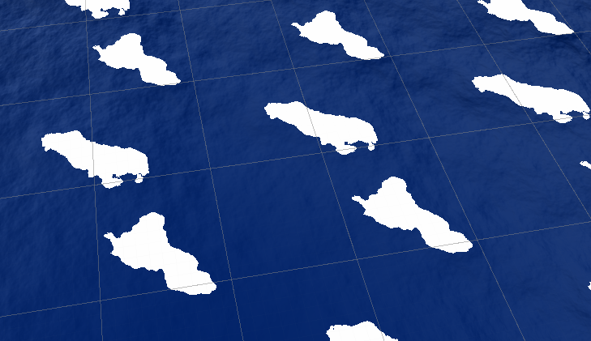

The water was created from a heightmap, which I used to make both the vertex displacement and the surface normals.
Initially, the intention was to create realistic looking water using Gerstner waves, but I wanted to see how well using a single heightmap would turn out.
The version I made was moderately satisfying, but there are a few things I wish to improve about it.
One of these was the addition of sea foam. I had thought of using the maximums on the heightmap and adding noise to create some sort of sea foam, but the results of testing made it seem like a moving texture on top of the water.
The maximums also do not account for the foam being distorted with the flow. It instead moves at the same pace as the water.
This is lack of distortion is apparent on the surface normals. Currently, the surface normals are set to move at a constant speed. However, water does not flow in this manner, so the result seems a little unnatural.
I will probably look for a way to solve both of these problems in the near future.